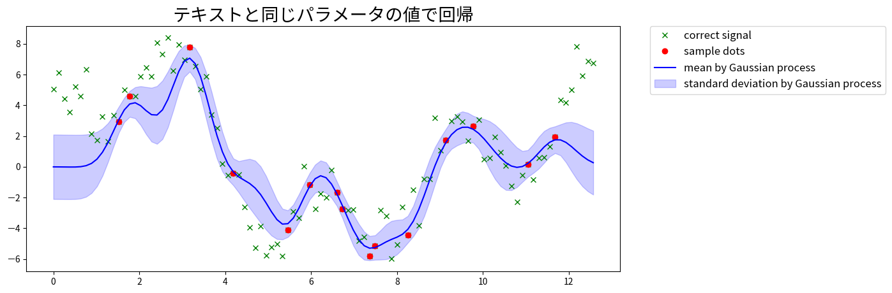

# テストデータ生成
import numpy as np
np.random.seed(seed=9973)
# 元データの作成
n=100
data_x = np.linspace(0, 4*np.pi, n)
data_y = 2*np.sin(data_x) + 3*np.cos(2*data_x) + 5*np.sin(2/3*data_x) + np.random.randn(len(data_x))
# 信号を欠損させて部分的なサンプル点を得る
missing_value_rate = 0.15
sample_index = np.sort(np.random.choice(np.arange(n), int(n*missing_value_rate), replace=False))
# データの定義
xtrain = np.copy(data_x[sample_index])
ytrain = np.copy(data_y[sample_index])
xtest = np.copy(data_x)前回 からの続き
テキスト 3.5 のパラメータ推定をやってみる。
trainデータを使って対数尤度が最大になるような \(\theta\) を探索する。
対数尤度の式は (3.92) の \(-\log |K_\theta| - y^T K^{-1}_\theta y\) 。
前回同様テストデータなどは以下の記事から借りている。
『ガウス過程と機械学習』Pythonのnumpyだけで実装するガウス過程回帰 #機械学習プロフェッショナルシリーズ - Qiita
# カーネル
import numpy.matlib
def kgauss(X,theta_1,theta_2,theta_3):
"""
RBF kernel
図 3.18 の実装
"""
N=len(X)
X=X.reshape(N,-1)
X=X.T # D * N 次元に
z=(X**2).sum(axis=0).reshape(1,N)
K = numpy.matlib.repmat(z.T,1,N)+ numpy.matlib.repmat(z,N,1) -np.dot(X.T,X)*2.
return theta_1*np.exp(-K/theta_2)+theta_3*np.identity(N)optuna を使って \(\theta\) を探索する
def _objective(theta_1,theta_2,theta_3):
""" 対数尤度関数 """
y=ytrain
x=xtrain
K=kgauss(xtrain,theta_1,theta_2,theta_3)
det_K=np.linalg.det(K)
inv_K=np.linalg.inv(K)
return -np.log(det_K)-np.dot(y.T,np.dot(inv_K,y))# optuna で探索
import optuna
optuna.logging.disable_default_handler()
def objective(trial):
theta_1 = trial.suggest_float("theta_1", 1e-10, 30)
theta_2 = trial.suggest_float("theta_2", 1e-10, 30)
theta_3 = trial.suggest_float("theta_3", 1e-10, 30)
return _objective(theta_1,theta_2,theta_3)
study = optuna.create_study(direction="maximize")
study.optimize(objective, n_trials=300)
print(study.best_trial)FrozenTrial(number=185, state=1, values=[-39.02225822902864], datetime_start=datetime.datetime(2024, 8, 15, 20, 26, 10, 299349), datetime_complete=datetime.datetime(2024, 8, 15, 20, 26, 10, 312097), params={'theta_1': 15.162762907400607, 'theta_2': 1.9226918374007205, 'theta_3': 0.463028699778022}, user_attrs={}, system_attrs={}, intermediate_values={}, distributions={'theta_1': FloatDistribution(high=30.0, log=False, low=1e-10, step=None), 'theta_2': FloatDistribution(high=30.0, log=False, low=1e-10, step=None), 'theta_3': FloatDistribution(high=30.0, log=False, low=1e-10, step=None)}, trial_id=185, value=None)print(study.best_params){'theta_1': 15.162762907400607, 'theta_2': 1.9226918374007205, 'theta_3': 0.463028699778022}plot
推定した \(\theta\) を使って描画する。
from matplotlib import pyplot as plt
%matplotlib inline
def visualize(data_x,data_y,xtest,sample_index,mu,var,title):
plt.figure(figsize=(12, 5))
plt.title(title, fontsize=20)
# 元の信号
plt.plot(data_x, data_y, 'x', color='green', label='correct signal')
# 部分的なサンプル点
plt.plot(data_x[sample_index], data_y[sample_index], 'o', color='red', label='sample dots')
# 分散を標準偏差に変換
std = np.sqrt(var)
# ガウス過程で求めた平均値を信号化
plt.plot(xtest, mu, color='blue', label='mean by Gaussian process')
# 分散
plt.fill_between(xtest, mu + 2*std, mu - 2*std, alpha=.2, color='blue', label= 'standard deviation by Gaussian process')
plt.legend(bbox_to_anchor=(1.05, 1), loc='upper left', borderaxespad=0, fontsize=12)
plt.show()def predict(xtrain,ytrain,xtest,theta_1,theta_2,theta_3):
"""
ガウス過程回帰
"""
ytrain=ytrain.copy()
N = len(xtrain)
M = len(xtest)
# まとめてカーネル計算
xtrain=xtrain.reshape(N,-1)
xtest=xtest.reshape(M,-1)
# 図3.15 のとおり行列を分割
X=np.vstack([xtrain, xtest])
X = kgauss(X,theta_1,theta_2,theta_3)
u, b=np.split(X,[N],0)
K, k_=np.split(u,[N],1)
k_t, k__=np.split(b,[N],1)
assert k__.shape==(M,M)
inv_K=np.linalg.inv(K)
yy = np.dot(inv_K, ytrain)
mu=np.dot(k_t,yy)
var=k__-np.dot(np.dot(k_t,inv_K),k_)
var=np.diag(var) # 対角成分の取得
return mu, varmu,var=predict(xtrain,ytrain,xtest,**study.best_params)visualize(data_x,data_y,xtest,sample_index,mu,var,'推定したパラメータで回帰')
テキストで使用されているパラメータを使って描画して比較してみる。
mu,var=predict(xtrain,ytrain,xtest,1.0,0.4,0.1)
visualize(data_x,data_y,xtest,sample_index,mu,var,'テキストと同じパラメータの値で回帰')
Copyright
Copyright tamuraup. 2024. All Rights Reserved